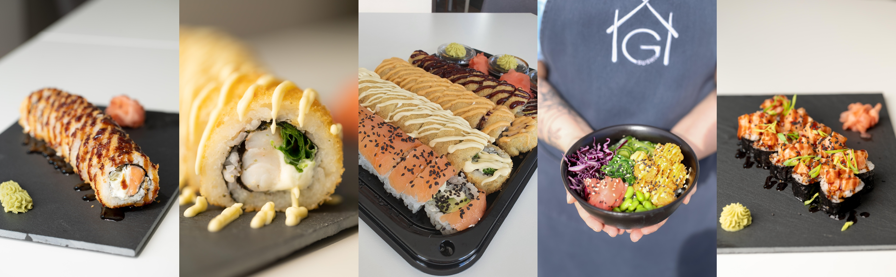
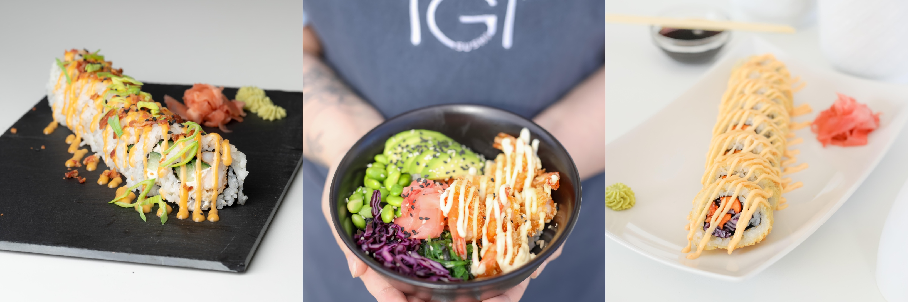

AVALEHT
MENÜÜ
GALERII
KONTAKT
MENÜÜ
Tööpäeviti päevapakkumised!

TEMPURA - - - 5tk/10tk
KANA TEMPURA - - - 5.5/9
(KANA, PUNANE KAPSAS, TOORJUUST, TŠILLIKASTE)
LÕHE TEMPURA - - - 6/9.5
(LÕHE, PORRU, TOORJUUST, UNAGI)
KREVETI TEMPURA - - - 6/9.5
(HIIDKREVETT, FRILLICE, TOORJUUST, SIDRUNIMAJONEES)
LUMEKRABI TEMPURA - - - 5.5/9
(LUMEKRABI, PORRU, TOORJUUST, UNAGI)
KITSEJUUSTU TEMPURA - - - 6/10
(KITSEJUUST, PEET, PORRU, SIDRUNIMAJONEES)
URAMAKI - - - 5tk/10tk
PHILADELPHIA - - - 5.5/9
(KÜLMSUITSULÕHE, KURK, AVOKAADO, TOORJUUST)
CALIFORNIA - - - 5/8.5
(LUMEKRABI, KURK, TOORJUUST)
KRÕBE KREVETT - - - 6/9.5
(KRÕBE HIIDKREVETT, KURK, TOORJUUST, PEEKON, TŠILLIKASTE, PORRU)
LÕHE TAR-TAR - - - 6/9.5
(LÕHE TAR-TAR, RÖSTSIBUL, TOORJUUST, UNAGI)
TŠILLINE KRABI - - - 5.5/8.5
(TŠILLINE LUMEKRABI, KURK, UNAGI, PORRU)
MAKI - - - 8tk
KURGIMAKI - - - 3
LÕHEMAKI - - - 4.5
AVOKAADOMAKI - - - 3.5
VEGAN - - - 5tk/10tk
VEGAN TEMPURA - - - 6/9.5
(KRÕBE BATAAT, PUNANE KAPSAS, TŠILLIKASTE)
VEGAN NR2 - - - 6/9
(KRÕBE TOFU, AVOKAADO, PUNANE KAPSAS, TŠILLIKASTE)
BOWLID
KÕIK BOWLID SISALDAVAD: RIIS, TOORJUUSTUKREEM (V.A VEGAN KAUSS), PUNANE KAPSAS, WAKAME, EDAMAME OAD, KURK
KANA BOWL - - - 8.5
(KRÕBE KANA, TŠILLIKASTE)
LÕHE BOWL - - - 8.5
(KÜLMSUITSULÕHE, UNAGI, TŠILLIKASTE)
KREVETI BOWL - - - 8.5
(KRÕBE KREVETT, SIDRUNIMAJONEES)
VEGAN BOWL - - - 8.5
(KRÕBE TŠILLI-TOFU, TŠILLIKASTE)
SNÄKK
TEMPURAS KREVETID - - - 5.5
(TŠILLIKREVETT, TŠILLIKASTE, RÖSTSIBUL, 6TK)
BATAADIFRIIKAD - - - 4.5
KOMPLEKT
KOMPLEKT 4x10TK OMAL VALIKUL - - - 32
(SISALDAB 2X SOJA, INGVER, WASABI)
LISANDID - - - 0.5
(WASABI, INGVER, SOJA)
***(ALLERGEENIDE KOHTA KÜSI LISA)***

TELLIMINE tel: +372 5648 3673